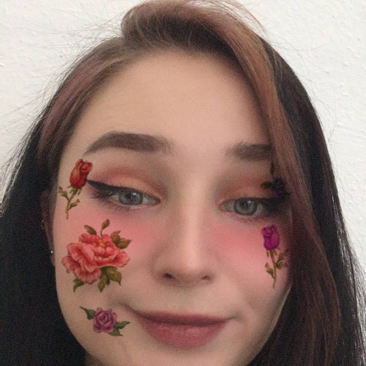

may june july

what's good schreibe extra alles lowercase weil sweg
hier ist ein linkerino
menu
bio
studium
kollegos
bio
- namo: may
- geburtsjahr: 1997
- lieblingsfarbe: lila
- hobby: netflix, schoki, fotografieren, musik
studium
- studiengang: mib
- semester: 2
- lieblingsessen in der mensa: gyros oder das, was annie nicht mehr packt
- lieblingsgetraenk im cafe: cappucino
kollegis
alrighty, byeee